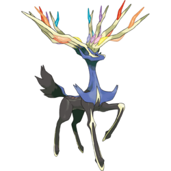
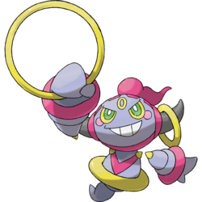
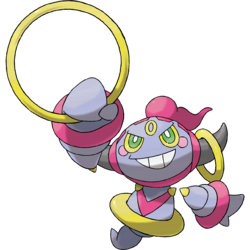

Generation 6
Generation 6 is the sixth series of games to release from Gamefreak in the pokemon franchise. This Generation featured two new games aswell as new remakes of Generation 3 in Pokemon Omega Ruby and Pokemon Alpha Sapphire making the total tally of games from this generation 4. Generation 6 unlike Generation 5 is the direct sequel of the Generation before it, but, otherwise has no link to the first 4 Generations which all had intertwined plots. Generation 6 was the first of the pokemon series to launch internationally at the same time on October the Twelth in every playable region on the Nintendo 3DS console. Team Flare led by Lysandre is the evil team of Genration 6. Calum is the male playable character of this Generation with Brendan making a return for the Gen 3 remakes and Serena is the female playable character of this Generation with May making a return for the remakes. The starters of this Generation are Chespin the Grass-type, Fennekin the Fire-type and Froakie the Water-Type.
Gameplay Mechanics
With an increase of the console in the new 3DS system the specs and size of Generation 6 is much larger and advanced than previous Generation. Spme of these changes include:
- 72 new Pokemon
- 62 new moves
- The introduction of a new type in the fairy type
- 27 New abilities
- A new mechanic called mega evolutions which is only available for certain pokemon and with a certain item that allows you to mega evolve
- The introduction of Ambush battles where the pokemon follows around the trainer until they touch and engage in battle
Region
The Kalos region stars in Generation 6 and is based off the real life country of France in Europe. The setting of France is so well kept too that the location off luminose city within the game (The largest city) is where Paris is on the map. Kalos is alot more Urban than previous Generations prominantly featuring cities that accompinied with new 3D features makes for the largest region in the Pokemon Franchise. The architecture is also very different in this game with more European architecture taking place in the ciy and towns compared to the much more modern Japanese and American styles that were previously featured. The region has large mountain ranges on the Eastern, western and Southern borders with small areas on the Western border that lead out to sea. The North is moslty hills and Grassland with a small amount of mountain in the west.
Legendaries
Generation 6 only has 4 legendaries in the Aura trio of Yveltal, Xerneas and Zygarde and Hoopa. Xerneas is only available in Pokemon X and Yveltal is only available in pokemon Y, both are catchable after defeating the Psycic gym in Geosenge Town in Team Flares Headquaters. Zygarde is availablke in both games after defeating the elite four in the Terminus cave. Hoopa is unavailable for capture in Generation 6
 
